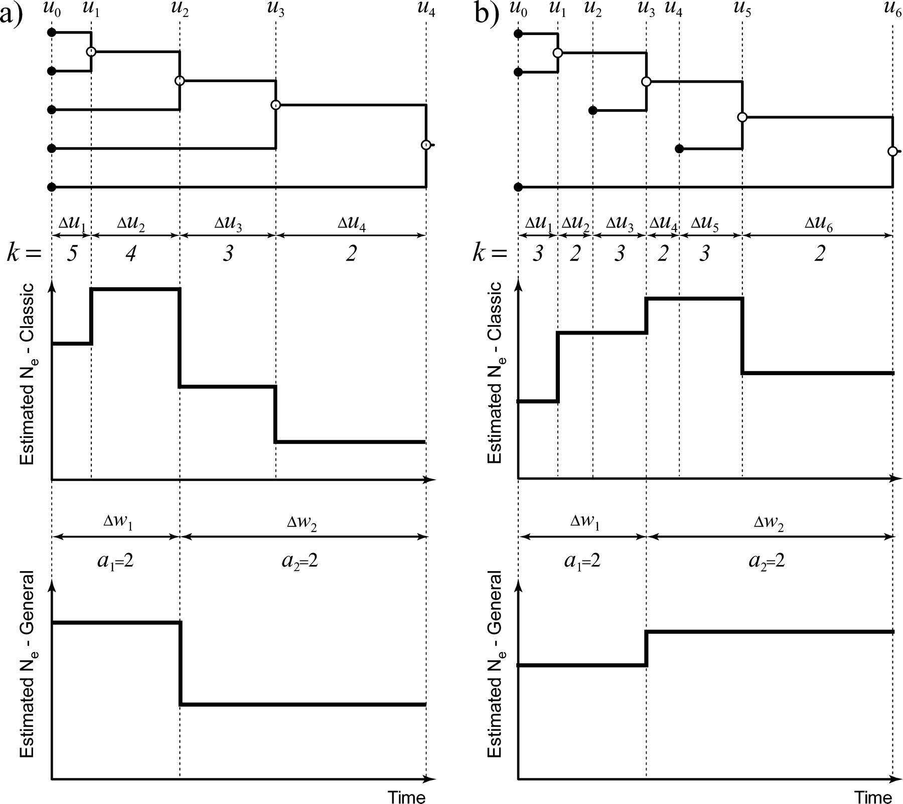
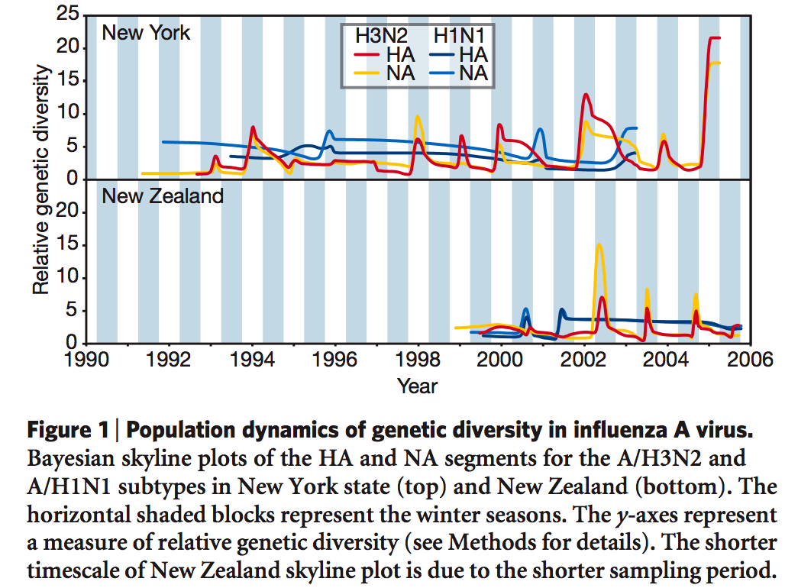

"Skyline" coalescent model

The generalized skyline plot
Introduced by Pybus and Strimmer (2001).
- Visual framework for exploring the demographic history of sampled DNA sequences
- Input: a single estimated ancestral genealogy (a tree)
- Output: nonparametric plot of the population size through time
- Groups adjacent coalescent intervals
- Converts information within these intervals to estimates of population size
for a single coalescent interval:
\[\hat{N}_k = \binom{k}{2}t_k\]
for \(j\) adjacent intervals:
\[\hat{N}_{k,j} = \frac{k(k-j)}{2j}\sum_{i=k-j+1}^k{t_i}\]
The generalized skyline plot - simulated data
Constant population size, \(N(t)=N_0\)
Exponential growth, \(N(t) = N_0 e^{-rt}\)
The generalized skyline plot - HIV-1 group M
The tree used here was estimated in Yusim et al (2001) Phil. Trans. Roy. Soc. Lond. B 356:855-866.
The black curve is a parametric coalescent estimate obtained from the same data under the expansion model, \(N(t) = (N_0-N_A)e^{-rt}+N_A\)
The Bayesian skyline plot
The Bayesian skyline plot (Drummond et al, 2005) estimates a demographic function that has a certain fixed number of steps (in this example 15) and then integrates over all possible positions of the break points, and population sizes within each epoch.
Detecting evolutionary bottlenecks using BSP
480 contemporaneous samples from a single locus
Detecting evolutionary bottlenecks using BSP
16 contemporaneous samples from each of 32 loci
Detecting evolutionary bottlenecks using BSP
480 samples sampled through time from a single locus
The population dynamics of genetic diversity in Influenza A

Rambaut et al (2008) Nature 453:615-620
Validating the Bayesian skyline plot
BSP versus parametric coalescent model
Hepatitis C in Egypt
Modeling complex demographic history
Dengue 4 in Puerto Rico
- N(t) = N0exp(-rt)
- log marginal likelihood = -10566.421
- N(t) = scaled-translated case data
- log marginal likelihood = -10478.572
Comparing BSP to incidence data
Dengue 4 in Puerto Rico